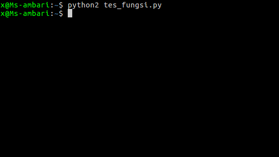

Pada saat kita membuat sebuah program besar dan memiliki banyak fitur, kita diharuskan membuat sebuah fungsi
membuat fungsi di python dibuat dengan kata kunci
def nama_fungsi ():
# isi fungsi/code...
print "ini dari fungsi"
biar lebih jelas coba buat file bernama fungsi
def nama_saya ():
print "nama saya adalah muslim ambari :)"
save, dan jalankan

kenapa tidak muncul apa-apa?
# membuat fungsi
def nama_saya ():
print "nama saya adalah muslim ambari :)"
# memanggil fungsi
nama_saya()
Hasilnya:
Nah, sekarang baru muncul :D
parameter sama seperti variabel, tungasnya untuk menyimpan data. parameter dibuat didalam tanda kurung
def saya (nama ):
print nama
saya("muslim ambari" )
bisa dilihat, bahwa kita membuat sebuah parameter yang berisikan variabel nama.
lalu kita panggil fungsinya dan mengisikan nilai kedalam variabel nama tersebut dengan "muslim ambari",
kita membuat 2 parameter yang berisikan variabel
memberikan nilai default pada parameter, nilai default ini berfungsi jika pengguna tidak menyediakan nilai argumen saat fungsi dipanggil
def contoh (nilai = 10 ):
print nilai
# tidak memberikan nilai parameter
contoh()
# memberikan nilai parameter
contoh(19 )
Hasilnya:
perhatikan, saat kita tidak memberikan nilai pada parameter, akan tampil nilai default yang kita berikan yaitu 10
kemudian kita memenggil fungsi lagi dan membarikan nilai 19, maka otomatis nilai default 10 akan diganti dengan 19